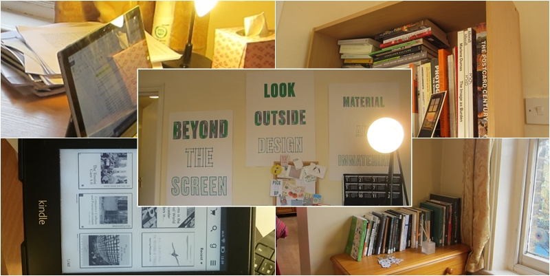

Research Questions
This blog presents an ethnographic study I conducted in a one bedroom flat occupied by a PhD student in London. The following themes were discussed:
- What is home and how is domestic space organized?
- The history of the private library at home
- How personal memories are inscribed in material objects at home
- Reading practices around print and digital materials and how to collect ephemeral ideas
- Discussions and evaluation of research methods, including participant observation, interviews, diaries, and tracking software
- Reflections on how to present anthropological research in a digital portfolio

Additional Notes
- One might notice that the participant does not appear in the photos apart from a silhouette accidentally reflected from the laptop monitor and a hand at the mobile phone. Not showing her face was a promise I made to her and a practice for anonymization, but hopefully her presence can be felt among the material things she surrounds herself with.
- Research materials have the propensity to be scattered and unruly. Creating this blog is much smaller in scale in comparison with other large, long-term research projects, but this project provided a glimpse for me into the knowledge work researchers are engaged in.
- Traditional anthropological methods such as interviews and shadowing provided most valuable insight for me in this study. If I had taken a completely quantitative approach, think descriptions would not have been possible.
Future Research Directions
During the course of working on this blog, I stumbled upon an evocative post on Facebook by another Taiwanese postgraduate student in London.
I miss home. Not just my family, but my book collections. Stacks of books at my former universities and at home. Those rare research-related books I'd acquired at obscure bookstores. I should've digitized all research materials, but it's too late now.
Being forced to discard material things and only keep the "essentials" is a shared experience among international or exchange students, migrant workers, and people who move on a regular basis. Can digital archiving be an alternative to moving physical objects? Do people consciously try not to be attached to physical things so that they can be more mobile?
The participant of my study, C, possessed embodied memories of things, and this dimension is inevitably missing in their digital counterparts. Can digital things preserve the same level of comfort as physical things?
In the foreseeable future, people will be living in environments where the physical and digital are entangled. Perhaps they will still be thinking about these questions and experiment with different arrangements.